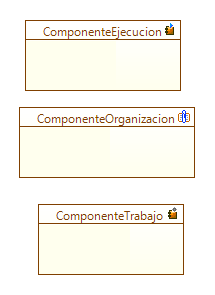

|
Perfil Ingeniero de Componentes |
|
Este perfil está encargado de identificar y
aplicar partes modulares del sistema, que encapsulan su contenido y
cuya manifestación es reemplazable dentro de su entorno (componente).
Los componentes definen su comportamiento en términos de interfaces
proveídas y requeridas.
Este componente permite generar tres etiquetas para los componentes, como se muestra en la Figura 1.  Figura 1. Elementos del perfil de Ingeniero de Componentes
|